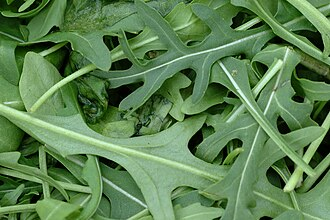

ルッコラの生産量 都道府県ランキング
全16都道府県の順位と収穫量
ルッコラの収穫量が全国で最も多いのは埼玉県で、48 tです。全国（165 t）の29%を占めます。

| 順位 | 都道府県 | 収穫量 | 全国に占める割合 |
|---|---|---|---|
| 1位 | 埼玉県 | 48 t | 29% |
| 2位 | 茨城県 | 20 t | 12% |
| 3位 | 福岡県 | 15 t | 9.1% |
| 4位 | 神奈川県 | 11 t | 6.7% |
| 5位 | 愛知県 | 11 t | 6.7% |
| 6位 | 佐賀県 | 7 t | 4.2% |
| 7位 | 千葉県 | 6 t | 3.6% |
| 8位 | 静岡県 | 6 t | 3.6% |
| 9位 | 奈良県 | 4 t | 2.4% |
| 10位 | 兵庫県 | 2 t | 1.2% |
| 11位 | 島根県 | 2 t | 1.2% |
| 12位 | 北海道 | 1 t | 0.6% |
| 13位 | 青森県 | 1 t | 0.6% |
| 14位 | 福島県 | 1 t | 0.6% |
| 15位 | 京都府 | 1 t | 0.6% |
| 16位 | 岡山県 | 1 t | 0.6% |
PR

ルッコラの生産量の推移（令和2年産〜令和6年産）
全国の収穫量は、令和2年産の139 tから令和6年産の165 tへ、19%増えました。期間中、1位は一貫して埼玉県です。
| 年 | 全国 | 1位 | 2位 | 3位 |
|---|---|---|---|---|
| 令和6年産 | 165 t | 埼玉県48 t | 茨城県20 t | 福岡県15 t |
| 令和4年産 | 157 t | 埼玉県51 t | 茨城県25 t | 福岡県17 t |
| 令和2年産 | 139 t | 埼玉県45 t | 茨城県17 t | 愛知県14 t |
この数字について
- 分類：アブラナ科
- 全国の収穫量：165 t
- この数字が表すもの：収穫量（収穫された重量）
- 調査：地域特産野菜生産状況調査 令和6年産
- 16県分を調査（調査していない県は順位に入りません）
ルッコラの生産量について、よくある質問
- ルッコラの生産量が日本一の都道府県はどこですか？
- 埼玉県です。地域特産野菜生産状況調査（令和6年産）で48 tでした。
- ルッコラの生産量ランキング2位・3位はどこですか？
- 2位は茨城県（20 t）、3位は福岡県（15 t）です。
- ルッコラの生産量ランキング4位・5位はどこですか？
- 4位は神奈川県（11 t）、5位は愛知県（11 t）です。ルッコラの全16県の順位は上の表のとおりです。
- ルッコラの全国の生産量はどれくらいですか？
- 165 t（令和6年産）です。